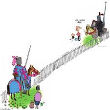
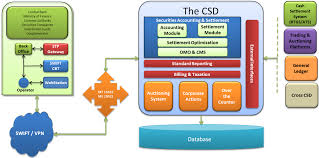

Kapitel 20 Tingsretlige konflikter

20.1 Parter og de forskellige rettighedskonflikter
Tingsretlige begreber
Aftaleerhverver har indgået en aftale om overdragelse af aktivet fx salg eller pantsætning, se fx gældsbrevslovens kap. 2 om fortabelse af indsigelser og rettigheder til fordel for en godtroende omsætningserhverver.
Hvis man i god tro køber et negotiabelt dokument eller får pant i det og får dokumentet i sin besiddelse, kan man fx gøre gældskravet gældende, selvom overdrageren havde stjålet dokumentet, eller skyldneren havde betalt før tiden.
Som aftaleerhverver anses også gavemodtager, men ikke arvinger.
Også en køber på tvangsauktion må anses som aftaleerhverver.
Retsforfølgende kreditor tvinger sit krav igennem uden aftale fx ved et udlæg.
Den aftale eller retsforfølgning, der skal kunne fortrænge en utinglyst ret, skal selv være tinglyst, og aftaleerhververen skal være i god tro, hvorimod en retsforfølgende kreditor ikke behøver at være i god tro.
Arv – her er en arving hverken at betragte som en aftaleerhverver eller som en retsforfølgende kreditor.
Lovbestemt pant er fx SKATs førsteprioritet til ejendomsskat, som ikke skal tinglyses, jf. TL § 4:
”De på fast ejendom hvilende skatter og afgifter til stat og kommune samt forsikringsbidrag til de af staten anerkendte brandforsikringsselskaber har gyldighed mod enhver uden tinglysning”.
Under skatter og afgifter falder ikke blot alm. ejendomsskatter, men også skatter og afgifter, der kun hviler på særlige grupper af ejendomme, jf. fx. udtrykkeligt miljøbeskyttelseslovens § 48, stk. 6, om gebyrer til affaldsordninger.
Afgifter til andre offentlige myndigheder end stat og kommune er ikke omfattet af TL § 4.
Video: Forstå tinglysning på 45 sekunder
Figur 20.1: Dobbeltoverdragelse
Dobbeltoverdragelse – når samme rettighedshaver disponerer over samme ret mere end én gang, dvs., at overdrageren uberettiget har overdraget rettigheden aktivet til flere erhververe.
Kædeoverdragelse – når rettigheden over aktivet først overdrages fra A til B, hvorefter B overdrager dette aktiv videre til C
20.2 Hvem der har ret til det pågældende aktiv i tilfælde af en rettighedskonflikt?
Følgende skal afklares, før rettighedskonflikten kan finde sin juridiske løsning:
Aktivtypen
Rettighedstypen
Sikringsakten
Type af rettighedskonflikt
20.2.1 Dobbeltoverdragelse
Figur 20.2: Dobbeltoverdragelse
Hvis en rettighedshaver (A) disponerer mere end en gang over den samme rettighed, er der således en rettighedskonflikt mellem de to erhververe af samme aktiv (B og C) (se fig.)
- HR: Først i tid bedst i ret – B fik en rettighed over aktivet før C gjorde, og derfor har B som udgangspunkt en bedre ret
U: C kan fortrænge B’s ret, hvis:
B ikke har foretaget den nødvendige sikringsakt
C har selv foretaget sin sikringsakt
Er C aftaleerhverver, skal C være i god tro om B’s ret på det tidspunkt han foretager sikringsakten.
Eksempel: I tilfælde af at en fordring bliver overdraget flere gange, er den erhverver, der først meddeler fordringsskyldneren om overdragelsen af fordringen, sikret retten til fordringen.
Det er under forudsætning af, at han var i god tro om, at der ikke var andre rettighedshavere ved underretningen til fordringsskyldneren, jf. GBL § 31, stk. 2.
Dette gælder, selvom han først fik overdraget fordringen efter, at en anden havde erhvervet fordringen.
Ved overdragelse af simple gældsbreve eller simple fordringer får erhververen ikke bedre ret end overdrageren, hverken over for gældsbrevets eller fordringens skyldner eller over for en tidligere indehaver af fordringen, jf. GBL § 27.
En overdragelse kan derfor ikke føre til, at skyldneren mister sine indsigelser.
De indsigelser, skyldneren havde mod overdrageren, kan han også gøre gældende mod erhververen, selv om erhververen var i god tro.
Det gælder også, når der er foretaget udlæg i fordringen, jf. GBL § 27.
Man taler også om ”dobbeltsuccession”, når to eller flere erhververe afleder modstridende rettigheder fra samme person.
I forholdet mellem fx en køber og en sælger giver dobbeltsalgssituationen anledning til et krav om erstatning for vanhjemmel (af oldn. vanr ‘manglende’ og heimild ‘berettigelse’, egl. ‘som hører til ens hjem, retmæssig ejendom’), dvs. sælgers manglende ret til at råde over salgsgenstanden.

Nogle aktivtyper behandles efter særlige juridiske regler:
20.2.1.1 Fast ejendom
Rettighedskonflikten mellem B og C skal løses efter lovbestemmelsen i TL § 1, stk. 2:
”Den aftale eller retsforfølgning, der skal kunne fortrænge en utinglyst ret, skal selv være tinglyst og erhververen ifølge aftalen være i god tro”.
HR: Først i tid bedst i ret – B har indgået aftalen med A først og har derfor først fået rettigheden over ejendommen
U: C kan fortrænge B’s rettighed hvis:
B ikke har fået tinglyst sin rettighed
C har fået tinglyst sin rettighed.
Hvis C er aftaleerhverver skal C være i god tro om B’s rettighed på tidspunktet for anmeldelse til tinglysning, jf. TL § 5:
”Ved god tro forstås i denne lov, at erhververen ikke kender den utinglyste ret og ej heller ved grov uagtsomhed er skyld i sit ukendskab til den. God tro må være tilstede på det tidspunkt, da aftalen anmeldes til tinglysning”.
Det særlige godtroskrav gælder således ved ekstinktion (udslettelse) af rettigheder over både fast ejendom, ejerpantebreve, tinglyste negotiable pantebreve, motorkøretøjer, andele i andelsboligforeninger, virksomhedspant, fordringspant og løsøre22.
Ond tro hos erhververens fuldmægtig udelukker også ekstinktion.
Det er antaget, at det er groft uagtsomt ikke at undersøge tingbogen.
Omvendt kan god tro styrkes gennem tingbogens oplysninger.
Det er næppe groft uagtsomt ikke at efterse matrikelkort eller andet kortmateriale:
U 1965 542/2 Ø. Er der faktisk vist kortmateriale, der kan indicere eksistensen af f.eks. en vejret, er det groft uagtsomt ikke at foretage nærmere undersøgelse.
U 1948 130 H (hjulspor tillige set i marken).
Konflikten mellem indehaveren af en utinglyst ret og en erhverver af ejendommen vil undertiden kunne ses ikke som et spørgsmål om erhververens gode eller onde tro, men som et spørgsmål om, hvorvidt erhververen overhovedet har fået tilsagt en ret, der strider mod den utinglyste ret:
U 1991 27 H (137 m² af en byejendom på 674 m² var uden matrikulering blevet fraskilt ved hegn. En senere erhverver af ejendommen fandtes alene at have erhvervet ret til det besigtigede areal, ikke til hele det matrikulerede areal).
God tro bedømmes i dansk ret i almindelighed efter forholdene på aftalens tidspunkt.
Efter tinglysningsloven skal god tro derimod normalt foreligge ved anmeldelsen (klokkeslættet) til tinglysning, jf. nærmere TL § 14, stk. 1.
20.2.1.2 Udlæg i fast ejendom
Hvis skyldner ejer fast ejendom, kan der på fogedretsmødet foretages udlæg i denne.
Udlægget tinglyses og får den retsvirkning, at skyldner ikke kan råde over ejendommen uden udlægshavers samtykke.
I realiteten betyder det, at skyldner ikke har mulighed for at sælge eller belåne ejendommen, og det kan selvsagt have stor betydning for skyldner og på den måde være et incitament til at betale kreditors tilgodehavende.
Som udlægshaver i en ejendom, har man også mulighed for at begære ejendommen solgt på tvangsauktion.
Dette kræver dog en såkaldt retlig interesse.
Det betyder, at der skal være rimelig mulighed for, at den udlægshaver, der begærer ejendommen på tvangsauktion opnår dækning.
Herudover kan udlægshaver blive pålagt at stille sikkerhed for, at foranstående pant- og udlægshavere opnår dækning på tvangsauktionen.
En udlægshaver, der ingen udsigt har til at opnå dækning på en tvangsauktion, kan altså ikke eller kun med stor risiko benytte dennes udlæg til at tvangsrealisere ejendommen.
20.2.1.3 Bilen
Konflikten om dobbeltoverdragelsen af en bil mellem B og C skal løses afhængig af, om parterne er køber, panthaver/ har ejendomsforbehold efter kreditaftalelovens § 34, stk. 1 eller er udlægshaver.
Figur 20.3: Dobbeltoverdragelse
C kan fortrænge B’s rettighed over bilen:
Som køber, hvis C får udleveret bilen først i god tro
Som panthaver eller indehaver af ejendomsforbehold, jf. kreditaftalelovens § 34, stk. 1, hvis C først har tinglyst rettigheden i Bilbogen i god tro om B’s ret, jf. TL § 5
Som udlægshaver, hvis C først har tinglyst rettigheden i Bilbogen
Se dom om forbrugers tab på godt 145.000 kr. ved bilforhandlers dobbeltsalg skulle dækkes:
Østre Landsret har den 13. juni 2012 afsagt dom i en ankesag mellem køberen af en bil og bilforhandleren. Bilkøberen havde ved slutseddel af 29. september 2009 hos forhandleren købt en bestemt fabriksny bil for 297.289 kr. til levering den 5. oktober 2009. Bilen havde forinden været markedsført som et “skarpt lagertilbud”, hvor det var angivet, at bilen var nedsat fra en tidligere gældende listepris på 442.900 kr. til 297.289 kr., således at man sparede 145.611 kr. Et par dage efter slutsedlens underskrift meddelte forhandleren køberen, at bilen forud for slutsedlens underskrift var solgt, således at handlen ikke kunne gennemføres. Baggrunden herfor var, at bilen via bilimportøren var solgt til Sverige. Forhandleren kunne ikke skaffe en tilsvarende bil af samme fabrikat. Køberen anlagde sag mod bilforhandleren med påstand om, at forhandleren skulle betale erstatning med 145.611 kr. Byretten tog køberens påstand til følge. Bilforhandleren ankede dommen og anførte, at bilen ikke var mere værd end den aftalte pris, som var markedsprisen. Køberen havde som følge heraf ikke lidt et tab. Østre Landsret stadfæstede byrettens dom, idet landsretten blandt andet henviste til, at bilen var udbudt som et “skarpt lagertilbud” med en prisnedsættelse på 145.611 kr., og at der på tidspunktet, hvor bilkøberen skulle foretage køb af en anden bil af tilsvarende type som følge af forhandlerens dobbeltsalg, ikke var mulighed for at købe med en tilsvarende prisreduktion. Landsretten fandt, at køberens tab kunne opgøres til prisreduktionen, således at forhandleren skulle betale 145.611 kr. til køberen. Sagen blev behandlet i Østre Landsrets 4. afdeling under j.nr. B-1947-11.
20.2.1.4 Udlæg i skyldners aktiver vedrørende køretøjer
Hvis skyldner ikke betaler, hvad der skyldes, kan man som kreditor få fogedrettens hjælp til at inddrive tilgodehavendet.
Udlæg i køretøjer tinglyses ligeledes.
Som ved fast ejendom, er det forholdsvist enkelt, inden fogedretsmødet, at gøre sig bekendt med, hvorvidt skyldner er indehaver af et køretøj.
Hvis der er friværdi i køretøjet, og køretøjet har en vis værdi, kan et sådant udlæg være en god og forholdsvis hurtig mulighed for, at kreditor kan få dækning for sit tilgodehavende.
Når udlægget er foretaget i fogedretten, kan køretøjet med fogedens hjælp afhentes og dernæst bortsælges på tvangsauktion.
Provenuet fra dette salg tilfalder pant- og udlægshavere i prioritetsrækkefølgen fra tingbogen.
Video: Mødet i fogedretten
Video: Gode råd om gæld i fogedretten
Video: Fogedretten og tvangsfuldbyrdelse
20.2.1.5 Løsøre
HR: Først i tid bedst i ret
U: Pant skal tinglyses for at være beskyttet mod senere rettigheder, jf. TL § 47. § 47 gælder ikke for underpant i biler mv., som er reguleret i TL kap. 6 a.
Udlæg i løsøre er beskyttet uden tinglysning. Dvs. også løsøre kan være genstand for udlæg i fogedretten.
I modsætning til udlæg i fast ejendom og køretøjer, så tinglyses sådanne udlæg ikke, og udlæggene bortfalder automatisk efter et år, hvis der ikke inden da er iværksat tvangsauktion.
Særskilte rettigheder over løsøre skal tinglyses før det kommer ind i virksomheden, hvis der også er givet flydende pant i virksomhedens aktiver.
Køber af aktiver, som er omfattet af flydende pant, kan fortrænge panthavers ret, hvis han er i god tro om panthavers ret.
Udlæg fortrænger virksomhedspant, hvis udlægshaver har sendt meddelelse til panthaver inden tre dage.
Konflikter mellem rettigheder over fast ejendom (tilbehør) i forhold til rettigheder over løsøre:
Særskilte rettigheder over løsøre, skal aftales før løsøret kommer ind på ejendommen og sikringsakten skal foretages med det samme.
TL § 37 fortrinsret over virksomhedspant. Aktiver, der er omfattet af en panteret i medfør af TL § 37, kan ikke omfattes af et virksomhedspant, uanset om panteretten i den faste ejendom er tinglyst før eller efter virksomhedspantet, jf. nærmere TL § 47 c, stk. 4, nr. 1.
TL § 38 afskærer inden for sit anvendelsesområde adgangen til at opretholde særskilte rettigheder over bestanddele og tilbehør til den faste ejendom, det være sig i form af ejendomsforbehold, løsøreunderpant, leasing eller på anden måde.
20.2.1.6 Udlæg i skyldners løsøre
Hvis skyldner ikke betaler, hvad der skyldes, kan man som kreditor få fogedrettens hjælp til at inddrive tilgodehavendet.
Også løsøre kan være genstand for udlæg i fogedretten.
I modsætning til udlæg i fast ejendom og køretøjer, så tinglyses sådanne udlæg ikke, og udlæggene bortfalder automatisk efter et år, hvis der ikke inden da er iværksat tvangsauktion.
Det er dog værd at bemærke, at tvangssalg af løsøre uden den store værdi, ofte ikke står mål med de omkostninger, der er forbundet hermed.
Video: Hvordan sender man et betalingspåkrav til fogedretten:
Video: Unge og gæld:
20.2.1.7 Dobbeltoverdragelser af fondsaktiver
Fondsaktiv: ”Dematerialiseret omsætteligt værdipapir, der er registreret i en værdipapircentral (CSD)”, jf. kapitalmarkedslovens § 3, nr. 34.

Dvs. et papir, som ikke foreligger i fysisk form, men er registreret elektronisk i den danske Værdipapircentral eller anden værdipapircentral.
Alle børsnoterede aktier og obligationer mv. skal registreres på denne måde og foreligger således som fondsaktiver.
Begrebet må ikke forveksles med fondsaktier eller fondsanparter.
Et fondsaktiv anses som registreret i en CSD (Central securities depository), både når den pågældende CSD opererer som issuer-CSD og forestår den første registrering af et fondsaktiv, og når CSD’en agerer som investor-CSD og foretager en teknisk registrering i sine systemer af et papir, der er udstedt af en anden CSD.
Om den tingsretlige regulering af dobbeltoverdragelser mv., af fondsaktivet (børsnoterede værdipapirer) se nærmere om reguleringen af registreringssystemet i kapitalmarkedslovens § 184:
Rettigheder over fondsaktiver skal registreres i en værdipapircentral (CSD) for at opnå beskyttelse mod aftaler, der indgås om fondsaktiverne, og retsforfølgning, jf. kapitalmarkedslovens § 184, stk. 1.
En aftale eller retsforfølgning, der skal kunne fortrænge en ikkeregistreret ret, skal selv være registreret, og erhververen ifølge aftalen skal være i god tro ved anmeldelsen af rettigheden til det kontoførende institut, jf. kapitalmarkedslovens § 184, stk. 2.
Registreringens retsvirkninger regnes fra tidspunktet for endelig registrering i værdipapircentralen (CSD’en), jf. kapitalmarkedslovens § 184, stk. 3.
Et kontoførende institut skal straks indrapportere modtagne anmeldelser til registrering i en værdipapircentral (CSD), jf. kapitalmarkedslovens § 184, stk. 5.
Denne forpligtelse for det kontoførende institutter skal medvirke til at sikre, at retsvirkningen af en anmeldelse indtræder hurtigst muligt.
Sikringsakten ved overdragelse af fondsaktiver til eje såvel som til sikkerhed og ved kreditorforfølgning er således registrering i en CSD23.
Kapitalmarkedslovens § 184, stk. 1 svarer til TL § 1, stk. 1.
Registreringen beskytter rettigheder mod at blive fortrængt (sikringsaktens værnende funktion). pant i fondsaktiver, at registreringskravet nok er en nødvendig, men ikke en tilstrækkelig, sikringsakt, idet registreringskravet (uanset at dette ikke fremgår direkte af bestemmelsen) suppleres af det sædvanlige krav om rådighedsberøvelse – og i tilfælde af, at det tillades pantsætter at udtage fondsaktiver af depotet, at der føres kontrol med, at der ikke udtages mere end det aftalte.
Netop ved pant i fondsaktiver gælder et skærpet krav om rådighedsherøvelse, idet blot en kortvarig adgang for pantsætter sætter ham eller hende i stand til at tømme kontoen helt ved på sekunder fra sin netbank at sælge værdipapirbeholdningen i markedet henholdsvis foretage en kontooverførsel, hvorefter den i registreringen liggende offentliggørelse alene består i en mulighed for f.eks. kurator i pantsætters konkursbo at konstatere, at depotet allerede er tømt (og at pantet er borte).
Kapitalmarkedslovens § 184, stk. 2 svarer til TL § 1, stk. 2, og vedrører sikringsaktens eksstinktive funktion (muligheden for at fortrænge uregistrede rettigheder).
Kapitalmarkedslovens indeholder ikke en særlig definition af, hvad der skal forstås ved god tro, hvorfor dette afgøres i overensstemmelse med dansk rets almindelige regler.
Herefter er det et krav, at en aftaleerhverver ved anmeldelsen til det kontoførende institut hverken kendte eller burde kende den uregistrerede ret.
Dermed medfører også simpel uagtsomhed hos en aftaleerhverver om en tidligere uregistreret ret, at han anses at være i ond tro.
Som følge af den særlige måde, hvorpå fondsaktiver normalt omsættes har en aftaleerhverver som udgangspunkt ingen undersøgelsespligt, medmindre konkrete forhold giver anledning til en sådan.
I overensstemmelse med dansk rets almindelige regler, er det ikke et krav, at retsforfølgende kreditorer (f.eks. kontohaverens udlægshaver eller konkursbo) skal være i god tro for at kunne eksstingvere.
CSD’en fastsætter tidspunkter, hvor retsvirkningen indtræder for registrering af transaktioner med fondsaktiver, der indgår i en efterfølgende nettoafviklingsblok, transaktioner med fondsaktiver, der straksafvikles i en bruttoafvikling, og for tilskrivningen af renter, udbytte og andre af udstederen af de pågældende fondsaktiver foranledigede registreringer.
Registreringens retsvirkninger regnes fra tidspunktet for endelig registrering i CSD’en, jf. kapitalmarkedslovens § 184, stk. 3.
Registrering på en konto i en CSD gennemføres, når indrapportering og endelig prøvelse i den pågældende CSD er afsluttet.
CSD’en skal undersøge, om anmelderen er berettiget til at anmelde rettigheder over fondsaktiver på en konto, om de angivne fondsaktiver er til stede på kontoen, og om der er registreret andre rettigheder, som er i konflikt med det anmeldte.
Der bemærkes, at der herved ikke er tale om en materiel prøvelse af det anmeldte, men alene en prøvelse med udgangspunkt i de forhold, som er registreret vedrørende kontoen.
CSD’en fastsætter tidspunkter, hvor retsvirkningen indtræder for registrering af transaktioner med fondsaktiver, der indgår i en efterfølgende nettoafviklingsblok, transaktioner med fondsaktiver, der straksafvikles i en bruttoafvikling, og for tilskrivningen af renter, udbytte og andre af udstederen af de pågældende fondsaktiver foranledigede registreringer.
Oversigtsresume af reguleringen af dobbeltoverdragelser af fondsaktiver:
Konflikten mellem B og C skal således løses efter kapitalmarkedslovens § 184:
HR: Først i tid bedst i ret – B har indgået aftalen med A først eller har først fået foretaget udlæg og har derfor først fået rettigheden over fondsaktivet
*U**: C kan fortrænge B’s ret hvis:
- B ikke har registreret sin ret i CSD (Central securities depository)
- C har registreret sin ret i CSD
- Hvis C er aftaleerhverver skal C være i god tro om B’s ret på tidspunktet for registrering i CSD.
20.2.2 Kædeoverdragelser
Hvis B overdrager en rettighed over et aktiv til C.
A havde oprindeligt rettigheden over aktivet og har en indsigelse mod B’s ret.
Nu er konflikten om rettigheden mellem A og C.
HR: Kan A gøre indsigelsen gældende overfor B, kan samme indsigelse gøres gældende overfor C
U: C kan fortrænge A’s ret, hvis:
- C er aftaleerhverver
- A har ikke foretaget sikringsakt fx tinglyst indsigelsen
- C er i god tro om indsigelsen
- C har selv foretaget sikringsakt
A’s indsigelse er ikke en stærk ugyldighedsgrund
Nogle aktivtyper behandles efter særlige regler
20.2.2.1 Kædeoverdragelser ved fast ejendom
Rettighedskonflikten mellem A og C løses efter lovbestemmelsen i TL § 27, stk. 1. C kan fortrænge A’s ret over den faste ejendom, hvis:
Aftalen mellem A og B er tinglyst
C er aftaleerhverver
C har tinglyst sin ret
C er i god tro om A’s rettighed på tidspunktet for anmeldelse til tinglysning
A’s indsigelse ikke er en stærk ugyldighedsgrund, jf. nærmere TL § 27, stk. 2
Hvis C mister sin rettighed til ejendommen efter TL § 27, stk. 2, kan han eller hun søge erstatning af staten, jf. TL § 31.
Denne bestemmelse giver en godtroende erhverver ret til erstatning af statskassen, navnlig hvis erhververen bliver mødt af en stærk indsigelse om, at dokumentet er falsk, forfalsket, at det er fremkaldt retsstridigt ved personlig vold eller trussel om øjeblikkelig anvendelse af vold, eller en indsigelse om, at udstederen af dokumentet var umyndig jf. TL § 27, 2. pkt. I stedet for at opnå retten, opnår erhververen således erstatning.
20.2.2.2 Kædeoverdragelse af en bil
HR: Rettighedskonflikten mellem A og C over bilen løses som udgangspunkt til A’s fordel. A’s indsigelse mod B kan også gøres gældende over for C
U1: Hvis A har været uforsigtig eller meget passiv over for B, kan C fortrænge A’s ret over bilen
U2: Hvis A har gyldigt ejendomsforbehold i bilen, jf. kreditaftalelovens § 34, stk. 1, men ikke tinglyst det, vil C fortrænge A’s ejendomsforbehold over bilen.
…
20.2.2.3 Kædeoverdragelse af løsøre
HR: Rettighedskonflikten over et løsøre mellem A og C løses som udgangspunkt til A’s fordel. A’s indsigelse mod B kan også gøres gældende over for C
- U1: Hvis A har været uforsigtig eller meget passiv over for B, kan C fortrænge A’s ret over løsøret.
Et gyldigt ejendomsforbehold i et løsøre, jf. kreditaftalelovens § 34, stk. 1 skal som udgangspunkt respekteres af senere rettighedshavere – selvom det ikke er tinglyst.
20.2.2.4 Kædeoverdragelser af fondsaktiver på kapitalmarkedet
Kædeoverdragelser er reguleret af kapitalmarkedslovens § 186:
”Når registreringen af en aftale om rettigheder over fondsaktiver er endeligt gennemført i en værdipapircentral (CSD), kan en godtroende erhverver ifølge registreret aftale ikke mødes med nogen indsigelse mod gyldigheden af aftalen. Den indsigelse, at et dokument er falsk eller forfalsket, at dets udstedelse retsstridigt er fremkaldt ved personlig vold eller ved trussel om øjeblikkelig anvendelse af sådan, eller at udstederen var umyndig ved udstedelsen, bevares over for en godtroende erhverver ifølge registreret aftale”. *24
Bestemmelsen i kapitalmarkedslovens § 186 er inspireret af TL § 27.
Lovbestemmelsen i § 186 viderefører § 69 i værdipapirhandelsloven med visse præciseringer og ændringer omkring bevarelse af indsigelser.
Kun godtroende aftaleerhververe kan ekstingvere indsigelser, hvorimod reglen ikke kan påberåbes af retsforfølgende kreditorer.
Reglen kan således påberåbes af en panthaver og en erhverver af ejendomsret, men f.eks. ikke af en udlægshaver eller et konkursbo.
Når der er sket endelig registrering, indtræder beskyttelsen mod eksstinktion af indsigelser vedrørende gyldigheden af en aftale om rettigheder over registrerede fondsaktiver, jf. dog de stærke indsigelser i kapitalmarkedslovens § 186, 2. pkt.
Der er ikke blot tale om afskærelse af indsigelser mod gyldigheden af tidligere registrerede aftaler, men bestemmelsen yder tillige den godtroende erhverver beskyttelse mod indsigelser vedrørende hans egen aftale.
Bestemmelsen gælder derimod ikke udstederens indsigelser.
Dog omfattes det tilfælde, at et fondsaktiv er transporteret til den oprindelige udsteder, der på ny overdrager det ved aftale, der er ramt af en af de nævnte stærke indsigelser.
Det følger af bestemmelsens 2. pkt., at de nævnte stærke ugyldighedsgrunde kan gøres gældende, også over for en aftaleerhverver, som har fået sin aftale registreret i god tro.
Det bemærkes herved, at kapitalmarkedsloven ikke indeholder en regel svarende til den tidligere værdipapirhandelslovs § 80, stk. 2, som pålagde Værdipapircentralen en objektiv erstatningspligt for den, der ramtes af de nævnte stærke indsigelser.
Om erstatningsansvar hedder det i afsnit 3.17.4 i lovforslaget til kapitalmarkedsloven, at der for såvel de tilsluttede kontoførende institutter som CSD’en gælder et almindeligt culpaansvar.
Der gælder ikke som efter den tidligere værdipapircentrallov nogen regel om objektivt ansvar, når en materielt berettiget mister sin mulighed for at håndhæve stærke indsigelser eller for den erhverver, som kan mødes med sådanne indsigelser.
Oversigt:
- Rettighedskonflikten mellem A og C løses således efter kapitalmarkedslovens § 186.
C kan fortrænge A’s ret over fondsaktivet, hvis:
- Aftalen mellem A og B over fondsaktivet er registreret i CSD
- C er aftaleerhverver
- C har registreret sin ret over fondsaktivet i CSD
- C er i god tro om A’s ret på tidspunktet for registrering i CSD
- A’s indsigelse ikke er en stærk indsigelse (falsk, umyndig, voldelig tvang)
Afsnittet bygger bl.a. på Peter Mortensen Karnovkommentar til tinglysningsloven med yderligere litteraturhenvisninger.↩
Afsnittet bygger på Lars Hedegaard Kristensen og Henrik Kure Karnovkommentar til kapitalmarkedslovens § 184.↩
Afsnittet bygger på Lars Hedegaard Kristensen og Henrik Kure Karnovkommentar til kapitalmarkedslovens § 186.↩